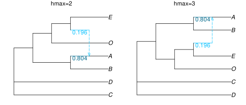
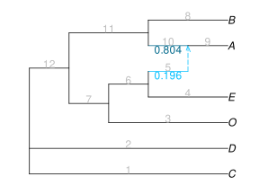
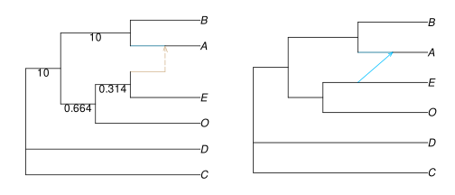
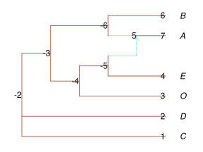

Network Visualization
To visualize a network, we can use the companion package PhyloPlots. Its manual has more examples, beyond the basic examples provided here.
text parenthetical format: extended newick
To get started, we load a few networks that we will later visualize. They are available in files that come with the package.
net2 = readnewick(joinpath(dirname(pathof(PhyloNetworks)), "..","examples","net2.out"))
net3 = readnewick(joinpath(dirname(pathof(PhyloNetworks)), "..","examples","net3.out"))HybridNetwork, Rooted Network
12 edges
12 nodes: 6 tips, 1 hybrid nodes, 5 internal tree nodes.
tip labels: D, C, O, E, ...
(D,C,((O,(E,#H7:::0.196):0.314):0.664,(B,(A)#H7:::0.804):10.0):10.0);
These networks are stored in extended newick parenthetical format, widely used by various software packages. This format encodes the network's topology, edge lengths, and edge inheritance γ for hybrid edges. These γ values measure the proportion of genes inherited via each parent at a reticulation event.
- A hybrid edge with γ=0.804 means that its child node (a hybrid or admixed population) received 80.4% of its genetic material from that edge.
- The other parent hybrid edge of this hybrid population should have γ=0.196. If the event was introgression, then this means that 19.6% of genetic material was inherited by gene flow. Generally, the γ values of all partners contributing to a given admixed population sum up to 100%.
Let's see this newick format, printed to the screen or written to a file:
julia> net1HybridNetwork, Rooted Network 12 edges 12 nodes: 6 tips, 1 hybrid nodes, 5 internal tree nodes. tip labels: C, D, O, E, ... (C,D,((O,(E,#H7:::0.196):0.314):0.664,((A)#H7:::0.804,B):10.0):10.0);julia> writenewick(net2) # writes to screen, full precision for branch lengths and γ"(C,D,((B,(A)#H7:::0.804411606649347):10.0,(O,(#H7:::0.19558839335065303,E):0.3135243143217013):0.664066456871298):10.0);"julia> writenewick(net2, round=true, digits=2)"(C,D,((B,(A)#H7:::0.8):10.0,(O,(#H7:::0.2,E):0.31):0.66):10.0);"julia> writenewick(net2, di=true) # γ omitted: for dendroscope"(C,D,((B,(A)#H7):10.0,(O,(#H7,E):0.3135243143217013):0.664066456871298):10.0);"julia> writenewick(net2, "mynetwork_net2.tre") # writes to file: creates or overwrites file
The option di=true is for the parenthetical format used by Dendroscope (without reticulation heritabilities). Copy this parenthetical description and paste it into Dendroscope, or use the plotting function described below.
visualize the network topology and γ inheritance
The newick format is great for computers, but not quite for human eyes. Are our 2 networks similar? Below, we plot them side-by-side, using extra commands that use the RCall package (more on that later).
The key command here is plot, with option showgamma=true to plot γ values below each hybrid edge.
using PhyloPlots
using RCall # to be able to tweak our plot within R
R"layout(matrix(1:2, 1, 2))" # to get 2 plots into a single figure: 1 row, 2 columns
R"par"(mar=[0,0,1,0]) # for smaller margins
plot(net2, showgamma=true);
R"mtext"("hmax=2") # add text annotation: title here
plot(net3, showgamma=true);
R"mtext"("hmax=3")
Both networks have a single reticulation. In both, A is of hybrid origin, 80.4% sister to B, and 19.6% sister to E (which is otherwise sister to O). C & D are sister to each other, if we were to re-root the networks along the edge tha leads to ABEO.
So, these 2 networks appear identical. Are they really? To be sure, we can calculate the hardwired-cluster distance between them, which extends the Robinson-Foulds distance on trees. See Comparing and manipulating networks for more on this dissimilarity.
julia> hardwiredclusterdistance(net2, net3, false) # rooted=false: to consider net2 and net3 as semidirected0
Indeed, these networks have the same semidirected topology.
saving the plot
In the example below, julia creates and sends the plot to R via RCall, so we can tweak the plot in various ways via commands sent to R. To save the plot in a file: we first tell R to create an image file, then we send the plot of the network, then we tell R to wrap up and save its image file.
using PhyloPlots # to visualize networks
using RCall # to send additional commands to R like this: R"..."
imagefilename = "../assets/figures/snaqplot_net1_2.svg"
R"svg"(imagefilename, width=4, height=3) # starts image file
R"par"(mar=[0,0,0,0]) # to reduce margins (no margins at all here)
plot(net1, showgamma=true, showedgenumber=true); # network is plotted & sent to file
R"dev.off()"; # wrap up and save image file
The plot function has many options, to annotate nodes and edges. In the example above, hybrid edges were annotated with their γ inheritance values (in blue: light blue for the minor edge with γ<0.5, and dark blue for the major edge with γ>0.5), and edges were annotated with their internal numbers.
We also used the option showedgenumber=true to see the edge numbers used internally. They is sometimes useful to re-root the network on some particular edge, for example.
styles and options
To see the list of all options, type ? to switch to the help mode of Julia, then type the name of the function, here plot.
Below are two visualizations. The first uses the default style (:fulltree) and modified edge colors. The second uses the :majortree style. That style doesn't have an arrow by default for minor hybrid edges, but we can ask for one by specifying a positive arrow length.
R"layout(matrix(1:2,1,2))";
plot(net1, showedgelength=true, minorhybridedgecolor="tan");
plot(net1, style=:majortree, arrowlen=0.07);
Edge lengths are shown, too. They were estimated in coalescent units: number of generations / effective population size. Some edge lengths are not identifiable, hence missing.
Below is another example, where space was added between the network and the taxon names via the tipoffset option. Also, edge colors were changed, and the nodes numbers are shown (used internally)
plot(net1, tipoffset=0.5, shownodenumber=true, edgecolor="tomato4",
minorhybridedgecolor="skyblue", majorhybridedgecolor="tan");